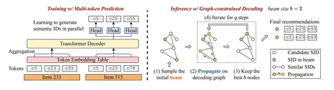

Генеративные модели с Semantic ID обычно используют короткие ID, например из четырёх токенов. Делают так, потому что авторегрессионная генерация длинных даёт высокую задержку и большой расход памяти. Но с короткими тоже есть проблема — они ощутимо ограничивают выразительность представления объектов.
В статье RPG предложили отказаться от авторегрессионной генерации и предсказывать все токены Semantic ID параллельно. Благодаря этому можно использовать длинные Semantic ID — до 64 токенов, и это ключевой вклад работы.
Но для параллельной генерации не очень подходят обычные Semantic ID на основе RQ. В RQ каждый следующий токен кодирует остаток после предыдущего, поэтому токены последовательно зависят друг от друга, а первые оказываются важнее последних. Вместо RQ авторы используют OPQ, который сначала преобразует item-вектор, а затем делит его на отдельно квантуемые подпространства. Поэтому токены получаются более независимыми и сбалансированными.
На обучении используется multi-token prediction loss. Модель параллельно предсказывает токены, а не сами товары, и для каждой позиции Semantic ID задан конкретный таргетный токен. Хотя генерация параллельная, позиции ID фиксированы — эквивалентность между разными комбинациями токенов на обучении не учитывается.
На инференсе возникает другая проблема. Независимо предсказанные токены могут сложиться в комбинацию, которой нет ни у одного реального айтема. Чтобы решить это, авторы используют graph-constrained decoding. Вершины графа соответствуют валидным Semantic ID реальных айтемов, а рёбра связывают похожие ID. Поиск проходит по этому графу и не требует полного перебора каталога.
Согласно приведённым результатам, RPG занимает первое место в 15 из 16 сравнений среди бейзлайнов. А по метрике NDCG@10 показывает в среднем относительный прирост 12,6% по сравнению с сильнейшим бейзлайном.
При этом в эксперименте на датасете Sports runtime GPU memory примерно в 25 раз ниже, а инференс почти в 15 раз быстрее относительно TIGER. При фиксированных параметрах декодирования время инференса и используемая GPU-память не зависят напрямую от числа айтемов. Однако полное хранилище, включая decoding graph и отображение айтемов в токены, растёт вместе с каталогом.
Отдельно авторы анализируют выразительность Semantic ID на энкодерах sentence-t5-base и text-embedding-3-large. Получается интересное: сильный энкодер сам по себе не гарантирует прирост. TIGER с коротким ID может потерять часть информации из хорошего эмбеддинга, тогда как RPG с длинным OPQ-ID лучше её сохраняет.
Абляции, которые в работе довольно подробные и убедительные, подтверждают, что отдельные части подхода работают именно вместе. При этом в целом статья пока выглядит скорее как исследование, чем как готовое продакшн-решение, потому что эксперименты проведены только на публичных Amazon-датасетах, production latency benchmark отсутствует, а обновление графа при изменении каталога не исследовано.
@RecSysChannel
Разбор подготовила
